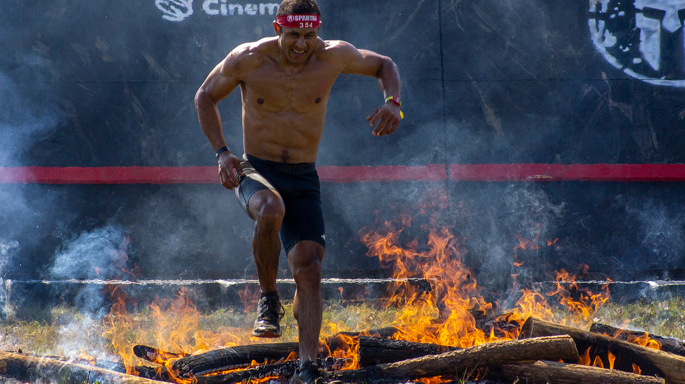
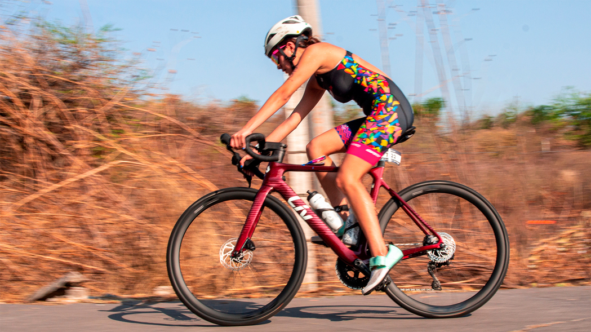
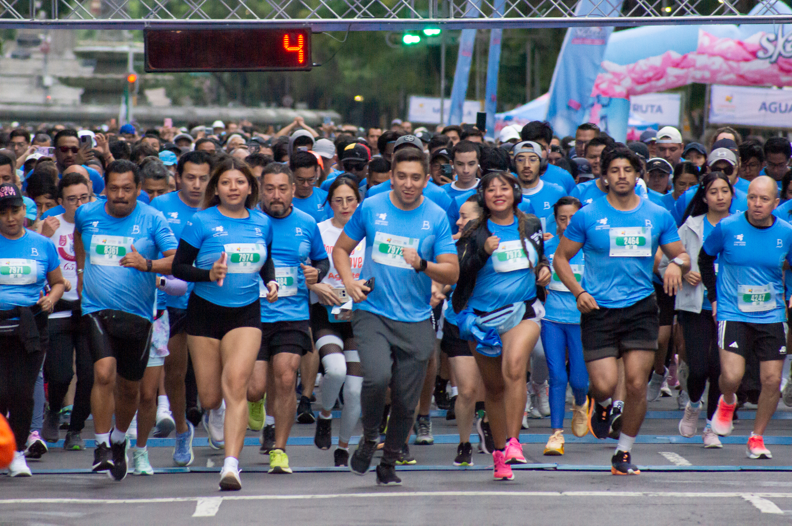
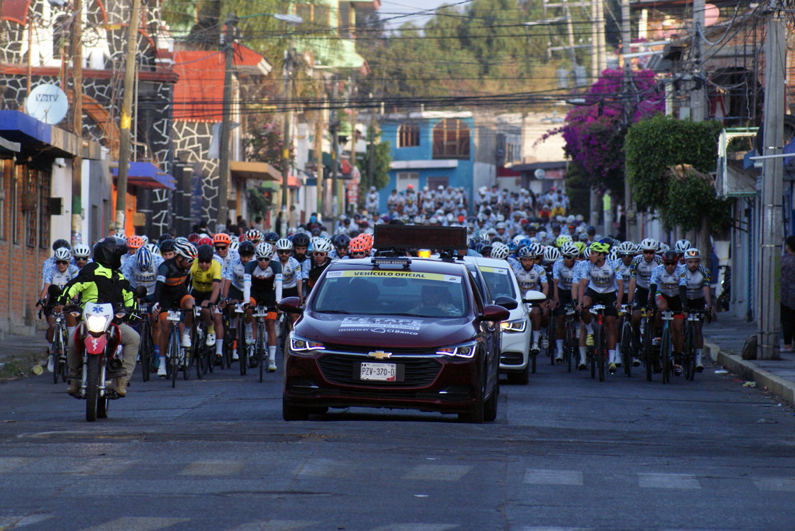
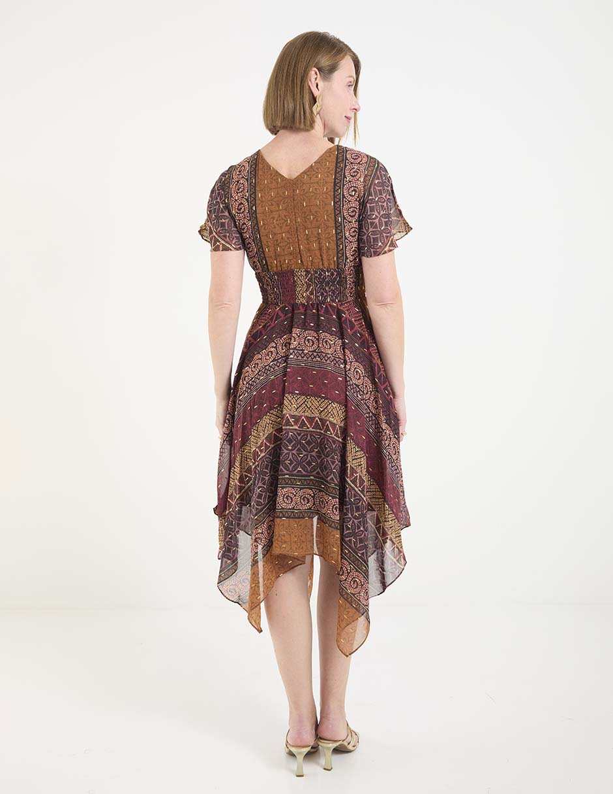
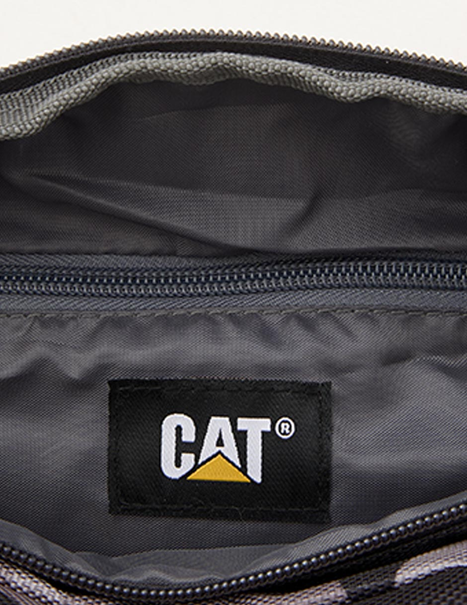
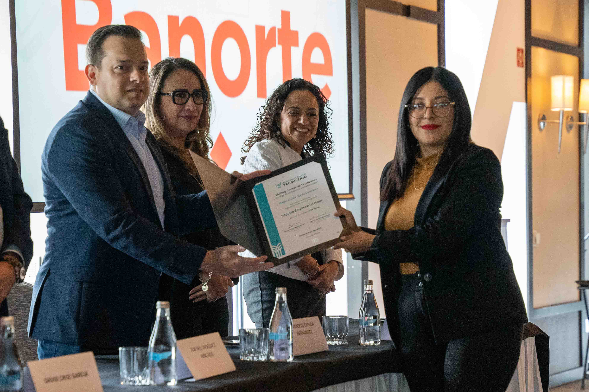
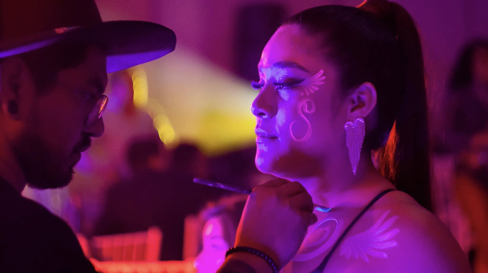

DeportivaSpartan Race — Fire & Mud Trail
Fotografía de acción extrema y alta velocidad. Congelado de movimiento, contraste cromático de fuegos y expresividad en ruta de obstáculos.

DeportivaFotografía de acción extrema y alta velocidad. Congelado de movimiento, contraste cromático de fuegos y expresividad en ruta de obstáculos.

DeportivaFotografía de barrido en ruta (panning) a alta velocidad. Enfoque dinámico en transiciones, ciclismo de precisión y estética de competencia.

DeportivaRegistro fotográfico masivo y de ambiente deportivo. Seguimiento de corredores, salidas dinámicas, momentos de meta y branding del evento.

DeportivaFotografía de competencia internacional en ruta. Cobertura de pelotón, ascensos de alta exigencia y sprints finales a alta velocidad.

RetoqueDesarrugado digital de prendas, corrección cromática y estandarización de siluetas para catálogos de e-commerce e indumentaria.

RetoqueLimpieza avanzada de producto, trazado de vectores, alineación automatizada por script y composición para e-commerce.

CorporativoRegistro fotográfico institucional, momentos clave, protocolo y memoria visual para graduaciones y eventos de marca.

CorporativoFotografía comercial, activaciones, presencia de marca e integración de imagen corporativa en instalaciones.
Descripción extendida...